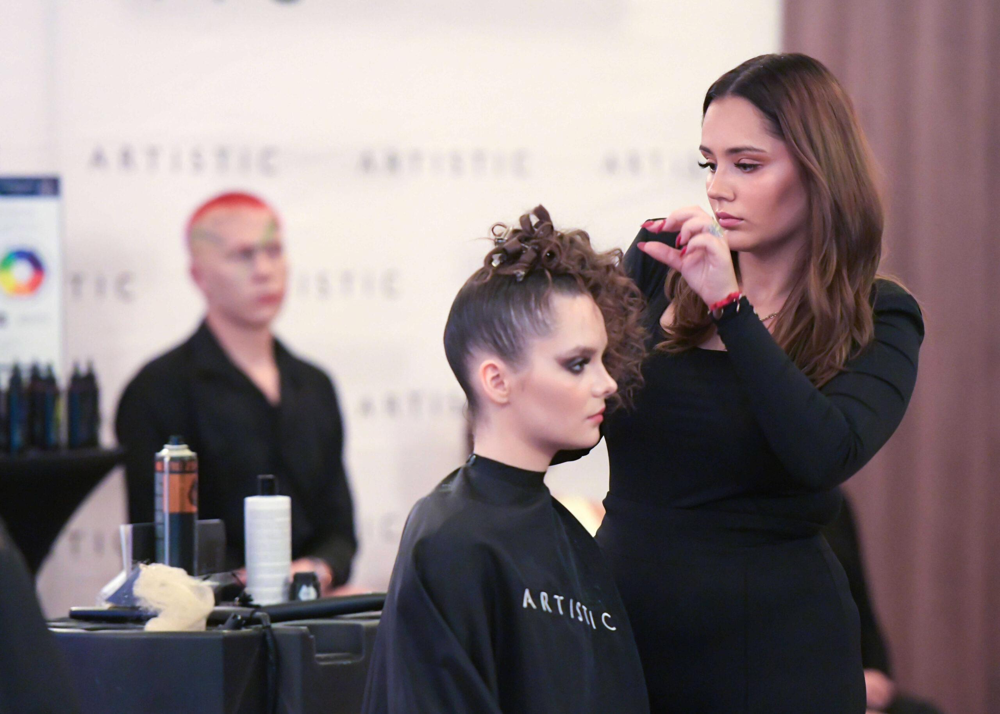

Temat numeru
Fryzura, o której mówi całe miasto
W studiu przy fotelu spotykają się dwa światy: rzemiosło, które pamięta czasy brzytwy i ręcznych maszynek, oraz nowoczesna koloryzacja, która nie wybacza błędów. „Wiktoria" od lat udowadnia, że jedno i drugie można robić bez kompromisów.
Klienci przychodzą tu na strzyżenie, a zostają na rozmowę. Wychodzą z fryzurą, która (jak donoszą nasi czytelnicy) „trzyma fason dłużej niż niejedna obietnica wyborcza". Redakcja potwierdza: 290 opinii w Google i średnia 4.7 nie bierze się znikąd.
Do usług: strzyżenia damskie i męskie, koloryzacja, baleyage oraz fryzury okolicznościowe. Redakcja poleca umawiać się telefonicznie, numer jak w stopce wydania.
„Przychodzę tu od lat i jeszcze nigdy nie wyszłam bez komplementu tego samego dnia."
— z listów do redakcji
